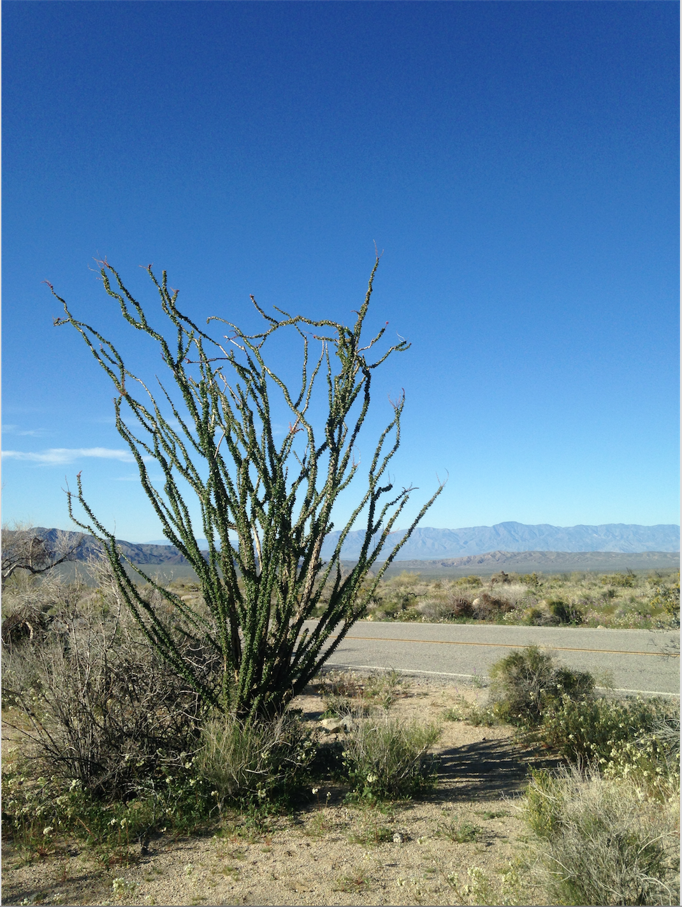

{% extends "base.html" %}

{% block title %}Blog entries{% endblock %}

{% block content_title %}{% if search %}Search "{{ search }}"{% else %}Blog entries{% endif %}{% endblock %}

<!-- the content of this page consists of
  all the entries -->
  <div class="row">

    {% block content %}
    <div class="col-md-5">
      {% for entry in object_list %}
      {% if search %}
      {% set entry = entry.entry %}
      {% endif %}
      <!-- a link to the relevant page -->
      <h3>
        <a href="{% if entry.published %}{{ url_for('detail', slug=entry.slug) }}{% else %}{{ url_for('edit', slug=entry.slug) }}{% endif %}">
          {{ entry.title }}
        </a>
      </h3>
      <!-- a preview of the content
      as well as information on when the post was created -->
      <p>{{ entry.html_content_preview(200)}}</p>
      <p>Created {{ entry.timestamp.strftime('%m/%d/%Y at %G:%I %p') }}</p>

      {% endfor %}
    </div>
    <div class="col-md-7">
      
    </div>
  </div>

      {% include "includes/pagination.html" %}  
  {% endblock %}